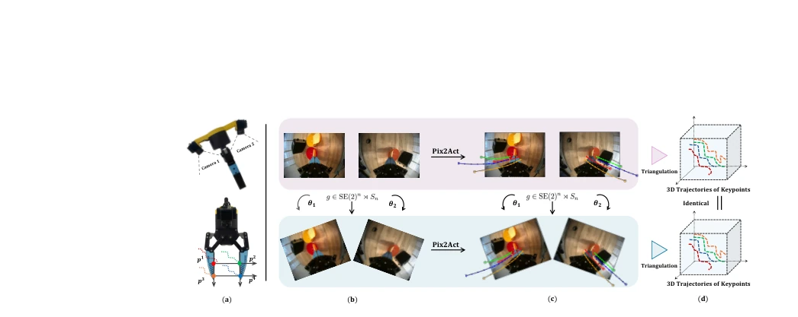
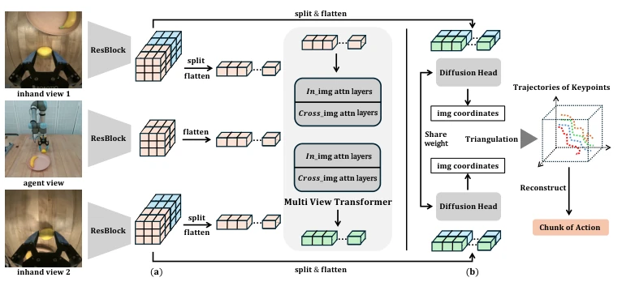
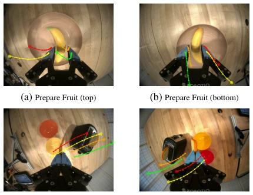
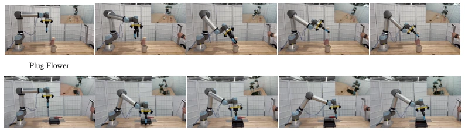
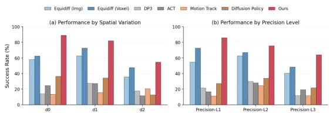
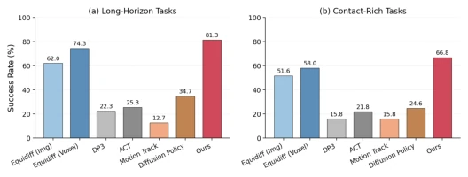

This paper flattens 3D actions into the 2D image space, which sounds like equipping robots with "X-ray vision", but actually utilizes the geometric properties of dual-finger grippers. The core of Pix2Act lies in decomposing SE(3) actions into continuous keypoint trajectories, and then triangulating them back, theoretically solving the pixel discretization problem. However, this "image space operation" has high hardware requirements, requiring two embedded cameras, which is simply a burden of "adding ingredients without price increase" for ordinary robotic arms. Although the authors claim data augmentation can improve generalization, but once camera calibration has even slight deviations, triangulation errors may be larger than direct SE(3) prediction. Furthermore, this method is only applicable to parallel grippers, limiting scalability. Overall, this is a very clever trick under specific hardware constraints, but generalizability is questionable, suitable for teams willing to sacrifice deployment flexibility for precision, after all, in the real world, camera shake is more common than algorithmic stability.
研究动机Motivation
现有操作策略学习大多将动作建模为 3D 笛卡尔空间中的平移和旋转 [32, 33]，但这忽略了图像空间与 3D 动作空间之间的几何关系，导致网络难以隐式推断复杂的 3D 轨迹，容易过拟合。虽然将动作投影为 2D 轨迹提供了可解释性，但现有方法如 Motion Track [1] 在每视图中独立去噪像素关键点，存在像素离散化导致的精度损失，且无法表示图像框外的动作，跨视图跟踪也不一致。此外，SE(3) 表示难以利用图像旋转的对称性进行数据增强，限制了策略在视角变化下的泛化能力。Pix2Act 旨在通过连续无界的 2D 图像坐标重新参数化动作，消除离散化限制，并利用 n-equivariance 对齐观测与动作，从而提升策略在空间扰动下的鲁棒性，使扩散模型能更有效地学习视觉 - 运动映射。
Existing manipulation policy learning mostly models actions as translations and rotations in 3D Cartesian space [32, 33], but this ignores the geometric relationship between image space and 3D action space, leading to networks struggling to implicitly infer complex 3D trajectories, prone to overfitting. Although projecting actions into 2D trajectories provides interpretability, existing methods like Motion Track [1] denoise pixel keypoints independently per view, suffering from accuracy loss due to pixel discretization, and cannot represent actions outside the image frame, cross-view tracking is also inconsistent. Furthermore, SE(3) representations make it difficult to utilize image rotation symmetry for data augmentation, limiting the policy's generalization ability under viewpoint changes. Pix2Act aims to reparameterize actions through continuous unbounded 2D image coordinates, eliminating discretization constraints, and utilize n-equivariance to align observations and actions, thereby improving the policy's robustness under spatial perturbations, enabling diffusion models to learn visual-motor mappings more effectively.

Figure 1: From left to right: (a) an illustration of our dual in-hand camera setup and the selected keypoints; (b,c) our proposed method consumes stereo images and predicts image actions for these keypoints; independent image rotations result in consistent transformations of the 2D action trajectories; (d) triangulation yields consistent 3D results for both the original and transformed image pairs, as they convey the same contextual information.
方法Method
Pix2Act 的整体流程是将 3D 动作块（Action Chunk）转化为 2D 图像空间的关键点轨迹。首先，通过刚体运动到关键点的双射映射，将 SE(3) 动作转换为夹爪上的 4 个 3D 关键点。接着，利用相机投影矩阵将这些 3D 点映射为连续的 2D 像素坐标，形成“图像动作块”（Image Action Chunk），并通过三角化无损恢复 3D 姿态。核心创新在于 n-equivariant 数据增强：对每个相机视图独立进行 SE(2) 旋转，同时旋转对应的图像动作轨迹，迫使策略学习几何一致的特征。网络架构采用 Diffusion X-Net，包含观察编码、多视图 Transformer 融合（In-image 和 Cross-image attention）以及共享的每视图扩散头。这种设计确保了模型在输入图像旋转时，输出动作轨迹也发生相应旋转，实现了 n-equivariance。推理时，预测的 2D 坐标经三角化重建为 3D 动作块发送给机器人，无需 3D 姿态监督。
The overall pipeline of Pix2Act converts 3D Action Chunks into keypoint trajectories in 2D image space. First, through a bijection mapping from rigid body motion to keypoints, SE(3) actions are converted into 4 3D keypoints on the gripper. Next, using camera projection matrices, these 3D points are mapped to continuous 2D pixel coordinates, forming "Image Action Chunks", and 3D poses are losslessly recovered via triangulation. The core innovation lies in n-equivariant data augmentation: performing SE(2) rotations independently for each camera view, simultaneously rotating the corresponding image action trajectories, forcing the policy to learn geometrically consistent features. The network architecture adopts Diffusion X-Net, including observation encoding, multi-view Transformer fusion (In-image and Cross-image attention), and shared per-view diffusion heads. This design ensures that when input images rotate, output action trajectories also rotate accordingly, achieving n-equivariance. During inference, predicted 2D coordinates are triangulated and reconstructed into 3D Action Chunks sent to the robot, without requiring 3D pose supervision.

Figure 2: Architecture of Diffusion X-Net. (a) Observation Encoding; (b) Action Generation. The left branches of X-Net take two in-hand images and one side-view image as input. The center of X-Net features a multi-view transformer that enables communication between the in-hand features and the side-view context features. The right branches of X-Net regress two sets of continuous keypoints separately from the two in-hand features with SE(2) augmentation. As a result, our model learns an n-equivariant function.
Experiments were conducted on 10 simulated tasks and 4 real-world tasks in MimicGen. Baselines include Diffusion Policy [86], EquiDiff [30], ACT [85], etc. Pix2Act achieved an average success rate of 75.2% on simulated tasks, 12.1% higher than the best baseline EquiDiff-Voxel, with significant advantages on high-difficulty tasks like StackThree. In real-world tasks, such as Plug Flower and Put in Drawer, Pix2Act significantly outperformed Diffusion Policy. Ablation studies show that removing equivariant data augmentation leads to an 18.3% drop in average success rate, verifying its importance. Furthermore, removing the shared diffusion head or proxy views also causes performance degradation. In camera perturbation tests, Pix2Act remained stable while baselines failed, demonstrating its robustness.

Figure 7: Predicted trajectory visualization. Predicted image-space keypoint trajectories overlaid on the top and bottom in-hand camera views for two real-world tasks. Trajectories remain consistent across the two views.

Figure 9: Agent-view camera perturbations during evaluation. Each row shows five representative agent-view frames captured with the side-view camera randomly perturbed (A small figure embedded in the top right ), for the Plug Flower task (top) and Put in Drawer task (bottom). The in-hand cameras are rigidly mounted to the end-effector and therefore cannot be perturbed independently. Pix2Act remains stable across these viewpoint changes, while the baseline fails to complete the tasks.
其他图片Other Figures

Figure 4: Performance Comparisons on Different Types of Task.

Figure 10: Performance Comparisons on Different Types of Task.